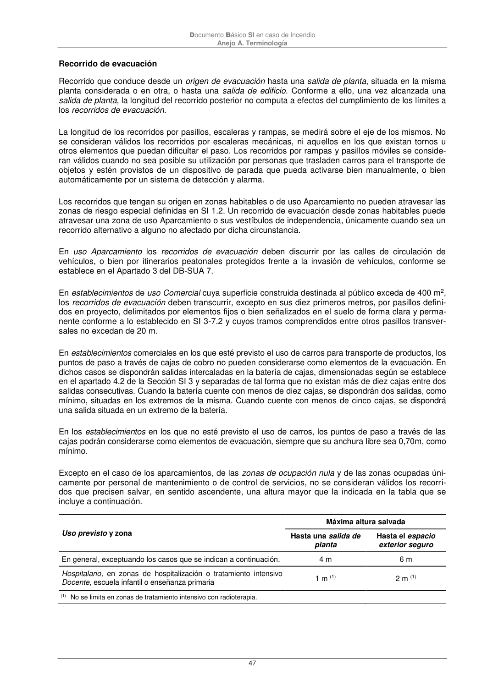

DB-SI · Recorrido de evacuación · versión 2025-03-04
SHA256: 0a2e78cd62471d9cc5cfe2efbc6aa39fdbad73c124aea7b039f9de96c141e105 · página física 47 de 92 · métodos de encabezado
solo si están cotejados.
Formatos: Markdown · JSON de bloques · PDF p. 47 · imagen PNG
Documento Básico SI en caso de Incendio Anejo A. Terminología 47 Recorrido de evacuación Recorrido que conduce desde un origen de evacuación hasta una salida de planta, situada en la misma planta considerada o en otra, o hasta una salida de edificio. Conforme a ello, una vez alcanzada una salida de planta, la longitud del recorrido posterior no computa a efectos del cumplimiento de los límites a los recorridos de evacuación. La longitud de los recorridos por pasillos, escaleras y rampas, se medirá sobre el eje de los mismos. No se consideran válidos los recorridos por escaleras mecánicas, ni aquellos en los que existan tornos u otros elementos que puedan dificultar el paso. Los recorridos por rampas y pasillos móviles se conside- ran válidos cuando no sea posible su utilización por personas que trasladen carros para el transporte de objetos y estén provistos de un dispositivo de parada que pueda activarse bien manualmente, o bien automáticamente por un sistema de detección y alarma. Los recorridos que tengan su origen en zonas habitables o de uso Aparcamiento no pueden atravesar las zonas de riesgo especial definidas en SI 1.2. Un recorrido de evacuación desde zonas habitables puede atravesar una zona de uso Aparcamiento o sus vestíbulos de independencia, únicamente cuando sea un recorrido alternativo a alguno no afectado por dicha circunstancia. En uso Aparcamiento los recorridos de evacuación deben discurrir por las calles de circulación de vehículos, o bien por itinerarios peatonales protegidos frente a la invasión de vehículos, conforme se establece en el Apartado 3 del DB-SUA 7. En establecimientos de uso Comercial cuya superficie construida destinada al público exceda de 400 m2, los recorridos de evacuación deben transcurrir, excepto en sus diez primeros metros, por pasillos defini- dos en proyecto, delimitados por elementos fijos o bien señalizados en el suelo de forma clara y perma- nente conforme a lo establecido en SI 3-7.2 y cuyos tramos comprendidos entre otros pasillos transver- sales no excedan de 20 m. En establecimientos comerciales en los que esté previsto el uso de carros para transporte de productos, los puntos de paso a través de cajas de cobro no pueden considerarse como elementos de la evacuación. En dichos casos se dispondrán salidas intercaladas en la batería de cajas, dimensionadas según se establece en el apartado 4.2 de la Sección SI 3 y separadas de tal forma que no existan más de diez cajas entre dos salidas consecutivas. Cuando la batería cuente con menos de diez cajas, se dispondrán dos salidas, como mínimo, situadas en los extremos de la misma. Cuando cuente con menos de cinco cajas, se dispondrá una salida situada en un extremo de la batería. En los establecimientos en los que no esté previsto el uso de carros, los puntos de paso a través de las cajas podrán considerarse como elementos de evacuación, siempre que su anchura libre sea 0,70m, como mínimo. Excepto en el caso de los aparcamientos, de las zonas de ocupación nula y de las zonas ocupadas úni- camente por personal de mantenimiento o de control de servicios, no se consideran válidos los recorri- dos que precisen salvar, en sentido ascendente, una altura mayor que la indicada en la tabla que se incluye a continuación. Uso previsto y zona Máxima altura salvada Hasta una salida de planta Hasta el espacio exterior seguro En general, exceptuando los casos que se indican a continuación. 4 m 6 m Hospitalario, en zonas de hospitalización o tratamiento intensivo Docente, escuela infantil o enseñanza primaria 1 m (1) 2 m (1) (1) No se limita en zonas de tratamiento intensivo con radioterapia.
